THE GLOBAL GOALS
Mengenal 17 Tujuan SDGs
17 tujuan untuk membangun dunia yang lebih baik dan berkelanjutan.
Apa itu Sustainable Development Goals?
Sustainable Development Goals (SDGs) atau Tujuan Pembangunan Berkelanjutan adalah 17 tujuan global yang disepakati oleh negara-negara anggota Perserikatan Bangsa-Bangsa (PBB) pada tahun 2015.
SDGs memiliki 169 target yang ingin dicapai pada tahun 2030. Tujuan ini membahas berbagai masalah dunia, seperti kemiskinan, kelaparan, kesehatan, pendidikan, kesetaraan, dan lingkungan.
SDGs memiliki tiga dimensi yang saling berhubungan, yaitu sosial, ekonomi, dan lingkungan.
17 Tujuan Pembangunan Berkelanjutan
Setiap tujuan memiliki fokus yang berbeda, tetapi semuanya saling mendukung untuk menciptakan kehidupan yang lebih baik.
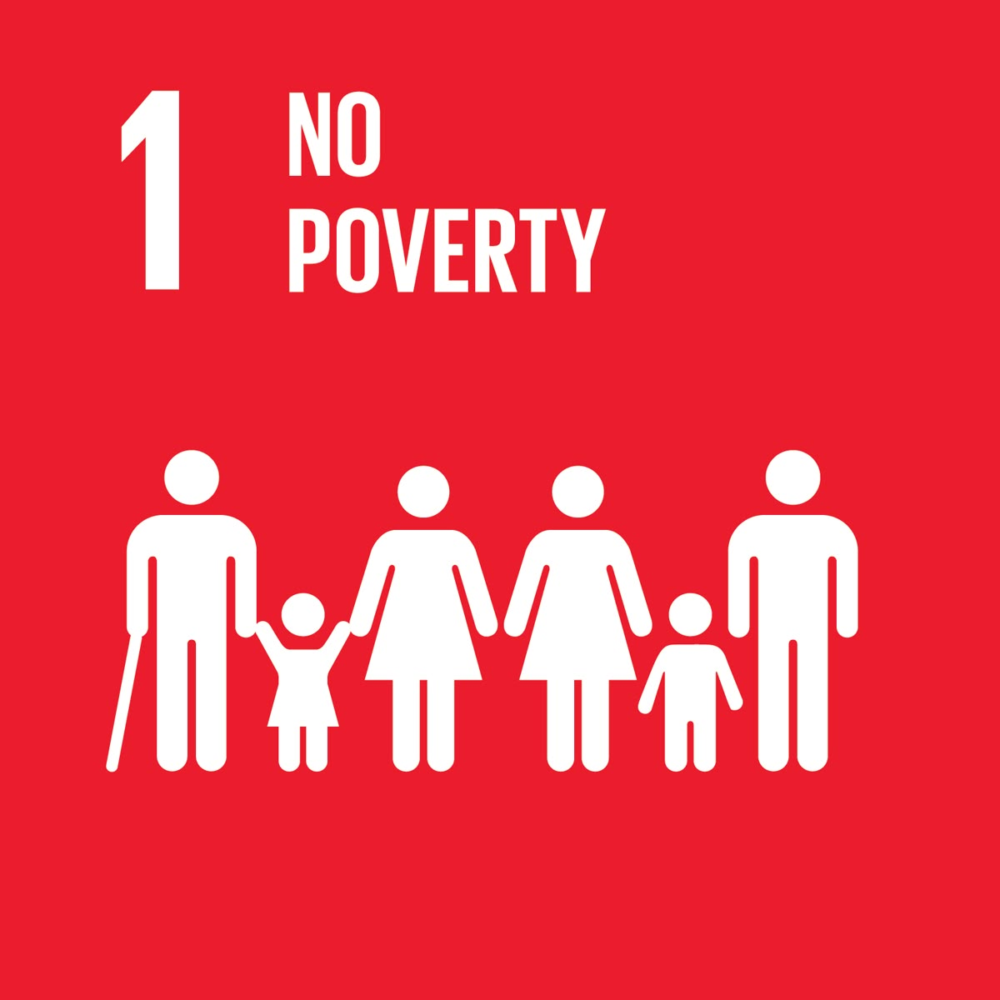
1. Tanpa Kemiskinan
Mengakhiri kemiskinan dalam segala bentuk di mana pun.
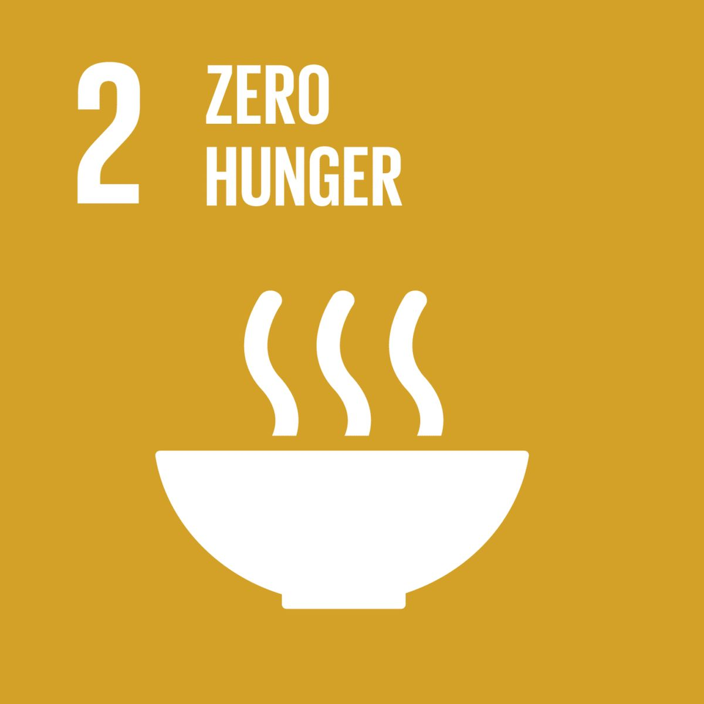
2. Tanpa Kelaparan
Mengakhiri kelaparan, mencapai ketahanan pangan, dan meningkatkan gizi.
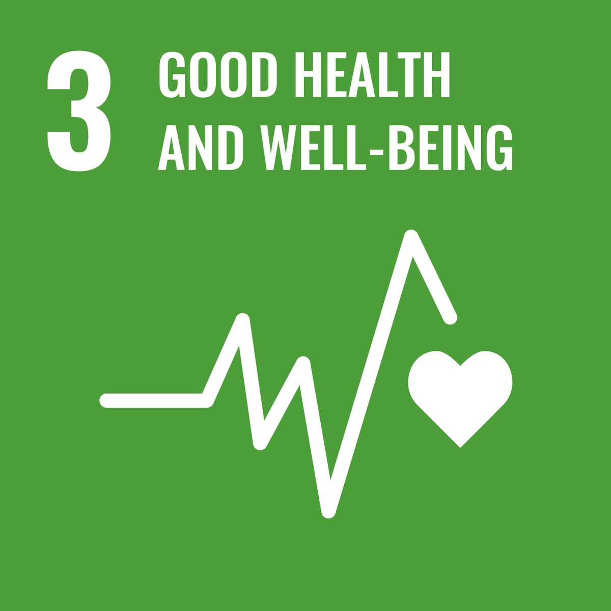
3. Kehidupan Sehat dan Sejahtera
Menjamin kehidupan yang sehat dan mendukung kesejahteraan semua orang.

4. Pendidikan Berkualitas
Menjamin pendidikan yang inklusif dan merata serta kesempatan belajar sepanjang hayat bagi semua orang.
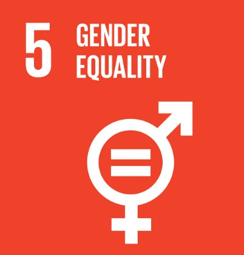
5. Kesetaraan Gender
Mencapai kesetaraan gender dan memberdayakan semua perempuan dan anak perempuan.
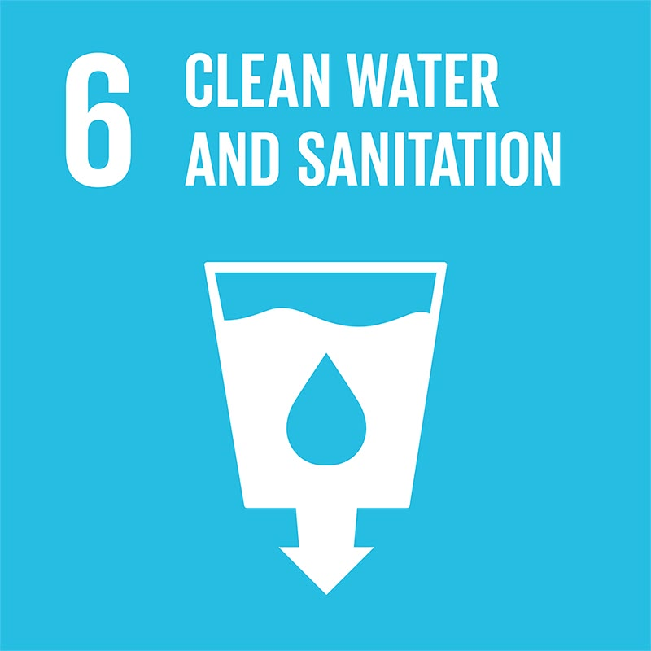
6. Air Bersih dan Sanitasi Layak
Menjamin ketersediaan dan pengelolaan air bersih serta sanitasi bagi semua orang.
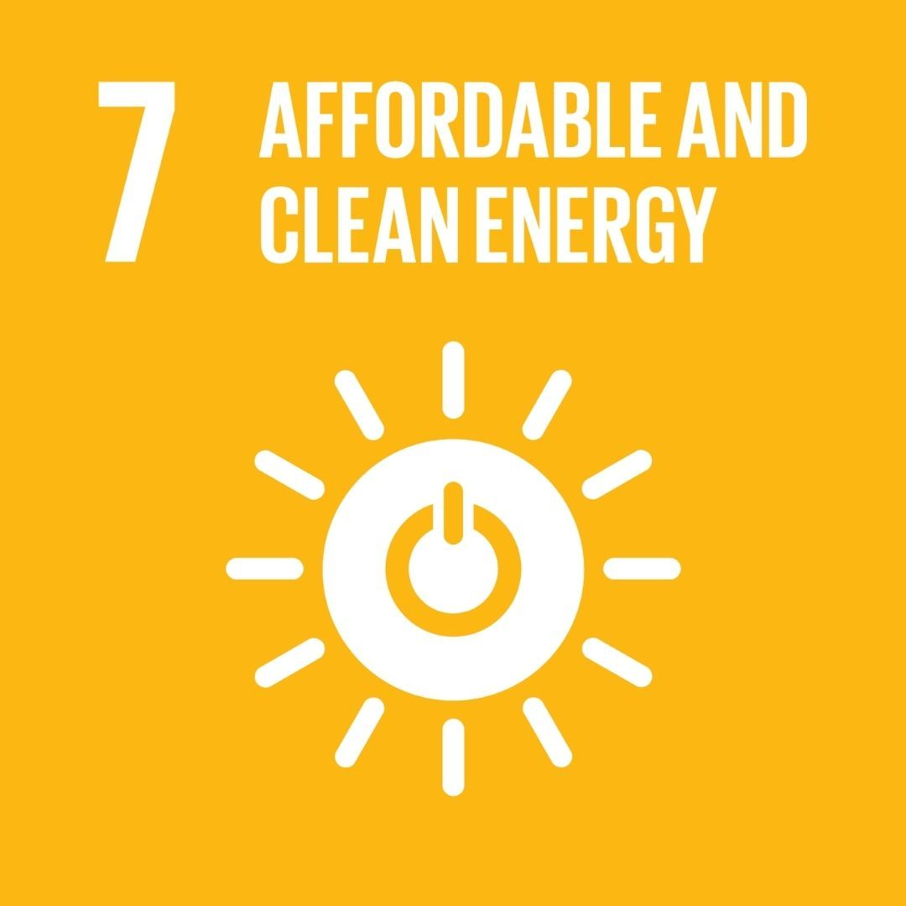
7. Energi Bersih dan Terjangkau
Memastikan akses terhadap energi yang terjangkau, andal, berkelanjutan, dan modern.
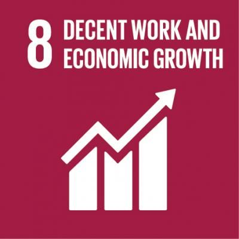
8. Pekerjaan Layak dan Pertumbuhan Ekonomi
Mendorong pertumbuhan ekonomi yang berkelanjutan dan pekerjaan yang layak.
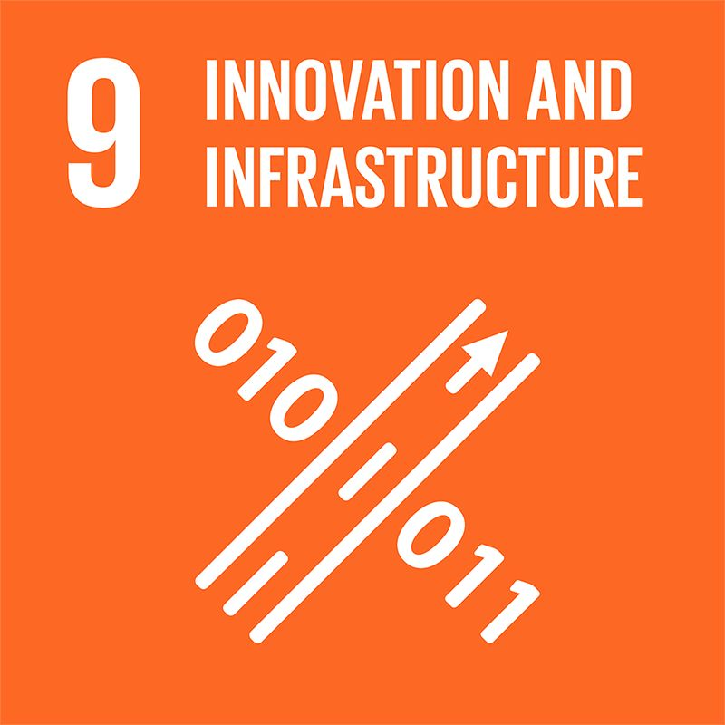
9. Industri, Inovasi, dan Infrastruktur
Membangun infrastruktur yang kuat serta mendorong inovasi dan industri berkelanjutan.
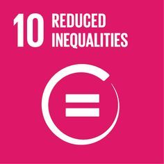
10. Berkurangnya Kesenjangan
Mengurangi kesenjangan di dalam dan antarnegara.
11. Kota dan Permukiman yang Berkelanjutan
Menjadikan kota dan permukiman inklusif, aman, tangguh, dan berkelanjutan.
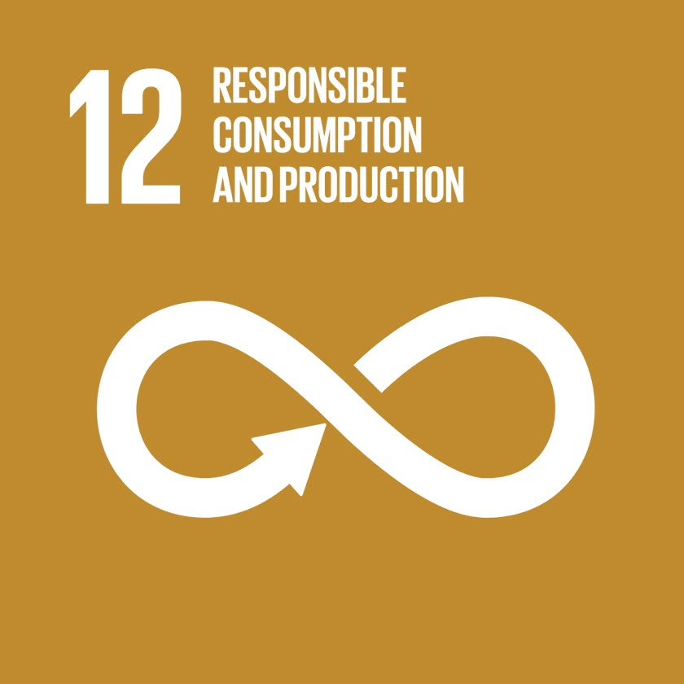
12. Konsumsi dan Produksi yang Bertanggung Jawab
Memastikan pola konsumsi dan produksi yang berkelanjutan.
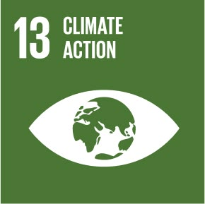
13. Penanganan Perubahan Iklim
Mengambil tindakan untuk mengatasi perubahan iklim dan dampaknya.

14. Ekosistem Lautan
Melestarikan dan memanfaatkan sumber daya laut secara berkelanjutan.
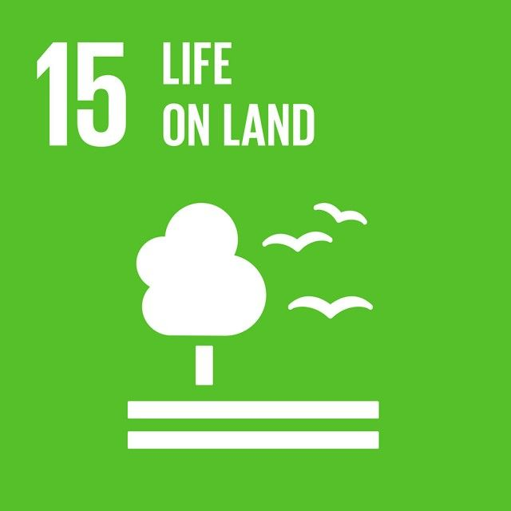
15. Ekosistem Daratan
Melindungi ekosistem daratan dan menjaga keanekaragaman hayati.
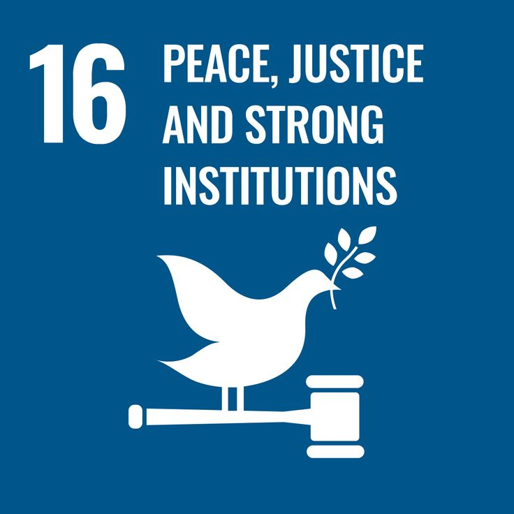
16. Perdamaian, Keadilan, dan Kelembagaan yang Tangguh
Mendorong masyarakat yang damai, adil, dan inklusif.

17. Kemitraan untuk Mencapai Tujuan
Memperkuat kerja sama global untuk mencapai pembangunan berkelanjutan.
Fokus Pilihanku: SDG 4
Dari 17 tujuan tersebut, website ini berfokus pada SDG 4, yaitu Pendidikan Berkualitas. Pendidikan penting karena memberikan kesempatan kepada setiap orang untuk belajar, berkembang, dan meraih masa depan yang lebih baik.
Lanjut ke Permasalahan